光线能源将千问办公应用于组织管理、数据分析与信息采集等核心场景，30天内以最低迁移成本实现管理意图精准传递、业务数据主权回归与AI数据源头打通。
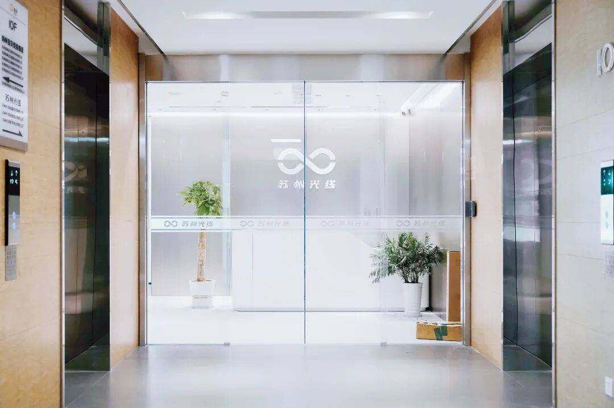
苏州光线--企业官网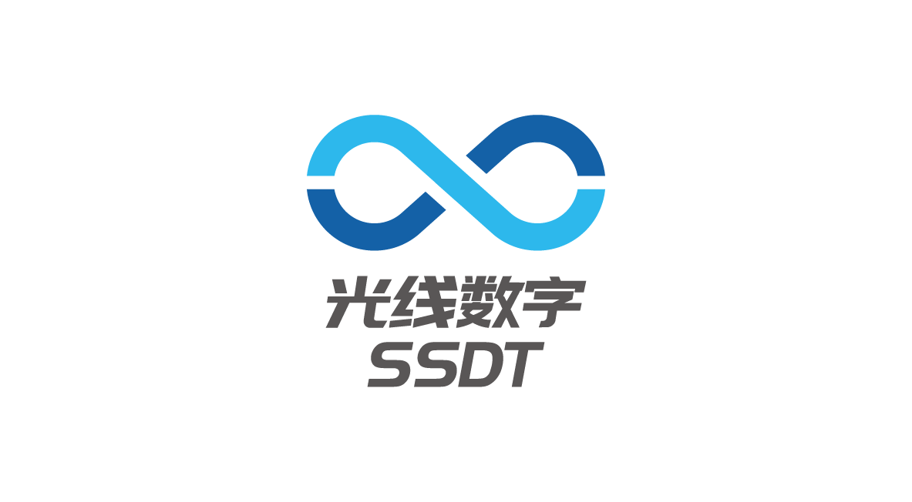
苏州光线数字科技有限公司成立于 2024 年 1 月，是一家聚焦能源数字化与产业智能化的科技企业，致力于通过AI、大模型、物联网等前沿技术推动新能源产业与数字技术深度融合。
公司围绕能源管理、数字化运营、光储充一体化及智慧运维等核心场景，为企业提供覆盖咨询、建设到运营的全流程数字化解决方案，助力客户实现运营效率提升与绿色低碳转型。
光线能源将千问办公应用于组织管理、数据分析与信息采集等核心场景，30天内，以最低迁移成本实现管理意图精准传递、业务数据主权回归与AI数据源头打通。具体包括企业文化结构化提炼、百万级订单自助分析、会议听记数据采集等场景。
✅ 现在通过千问办公知识库，将公司制度文档、价值观、管理层会议听记原文批量汇总，按组织架构分部门提炼企业文化核心要素，自动生成各部门专属的文化落地指引。
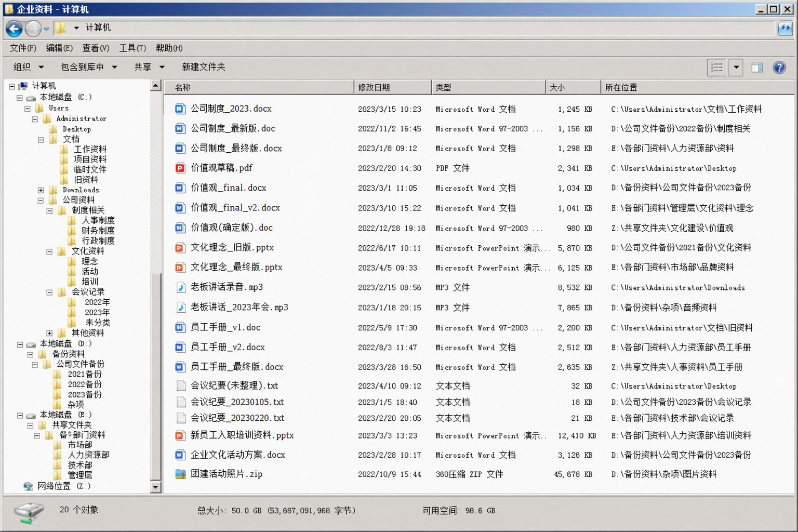
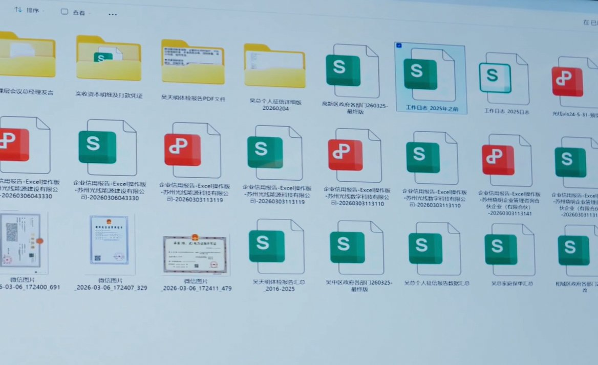
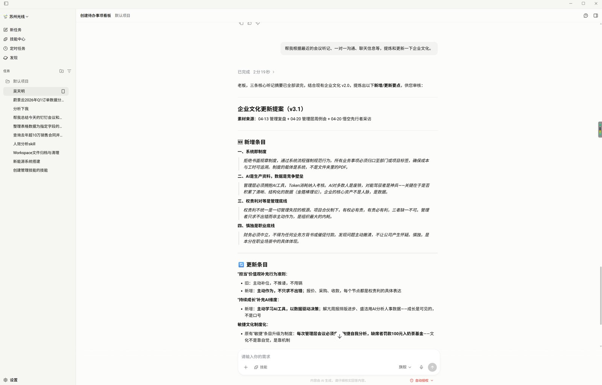
| 模块 | 内容描述 |
|---|---|
| 核心需求 | 将离散的企业文化资产（制度文档、管理层发言、员工手册）自动提炼为结构化体系，消除多层转述失真，生成可执行的部门级落地指引。 |
| Prompt | 请基于上传的公司制度文档、员工手册和管理层会议听记原文，首先提取所有文本中被反复强调的核心理念和价值观关键词，识别高频出现的战略导向和行为准则；然后按组织架构的部门维度，将提炼出的文化要素映射到各部门的具体业务场景，生成每个部门专属的文化落地指引（包含行为标准、考核要点、典型案例）；最后建立反向校验机制，定期比对实际组织行为与文化要求的一致性，输出文化体系迭代报告和改进建议清单。 |
| 场景示例效果 |  |
| 场景示例效果视频 |
✅ 现在通过千问办公，将数据回收本地，实现自助式即时分析
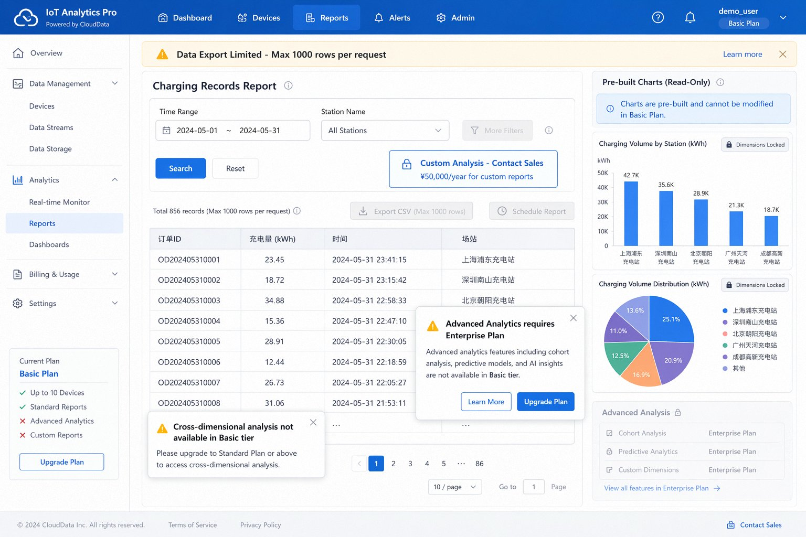
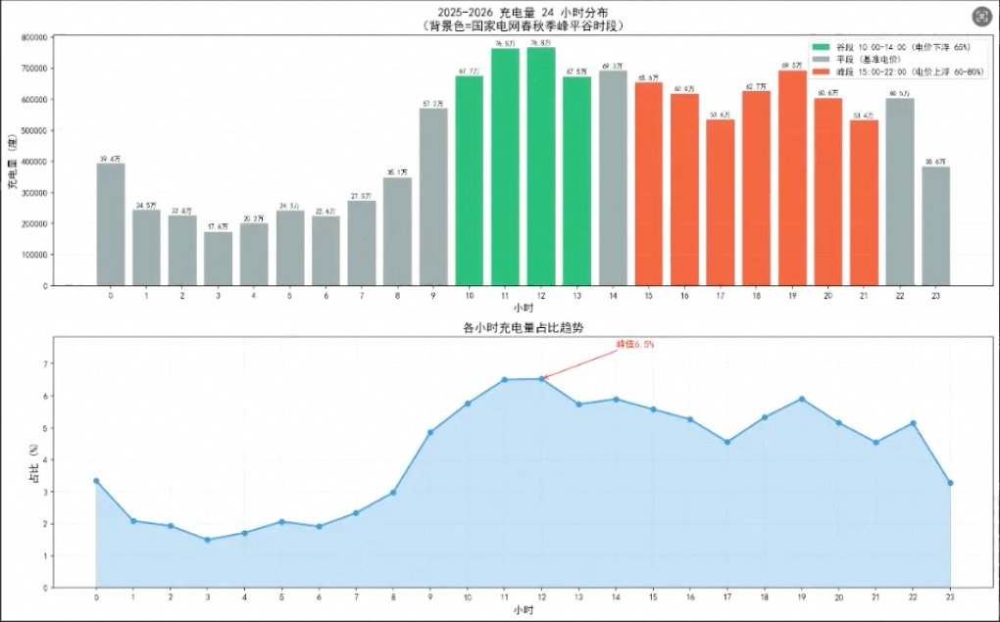
| 模块 | 内容描述 |
|---|---|
| 核心需求 | 将第三方平台的业务数据本地化存储，通过自然语言交互替代传统BI建模，实现低成本的多维交叉分析和即时可视化输出。 |
| Prompt | 请基于上传的订单数据CSV/Excel文件，首先在本地构建SQL数据库并完成数据清洗与标准化入库，然后根据用户提出的自然语言问题，自动生成对应的SQL查询语句并执行，提取结果后根据数据类型智能选择可视化形式（柱状图、折线图、饼图、热力图等），同时支持关联外部公网数据进行多维交叉分析，最后输出包含原始数据表、可视化图表和业务洞察结论的结构化分析报告，确保每次分析无需编码或搭建BI模型即可在分钟内完成。 |
| 场景示例效果 |  |
| 场景示例效果视频 |
✅ 现在通过AI听记卡，将公司内所有管理层的会议、讨论、一对一沟通，全部通过听记卡实时转写为文字，实现口头信息的结构化沉淀。
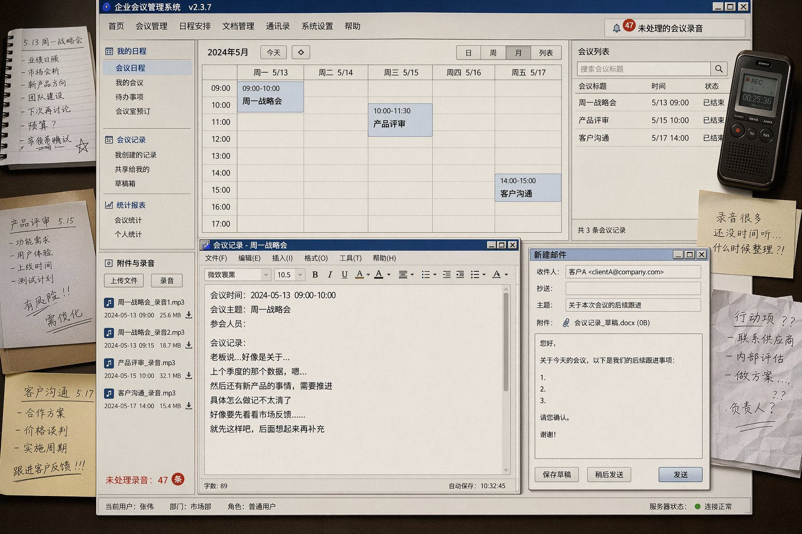
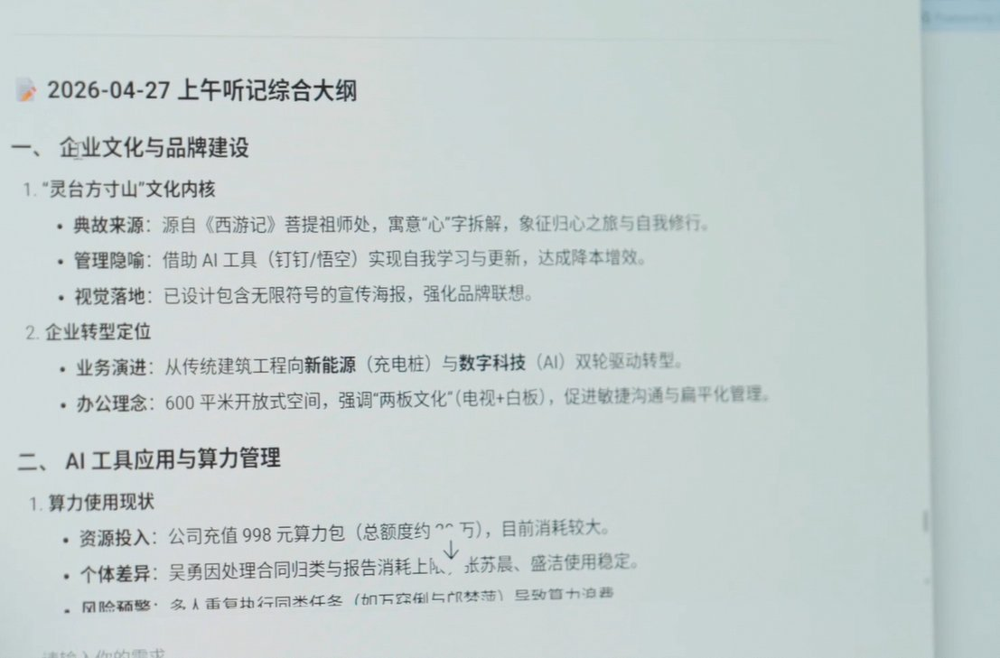
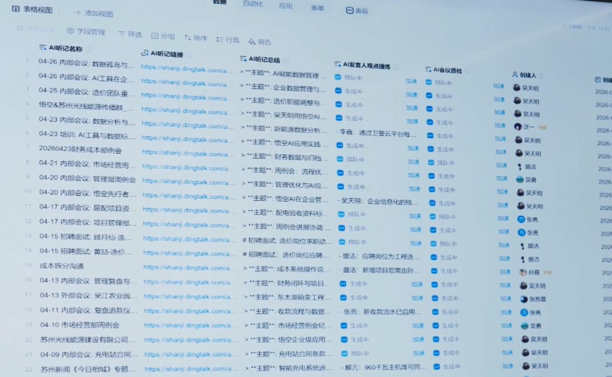
| 模块 | 内容描述 |
|---|---|
| 核心需求 | 将口头沟通产生的高价值信息实时转写为结构化文本并保真入库，打通数字化采集的“第一公里”，支持跨时间跨会议的关联分析与战略闭环验证。 |
| Prompt | 请基于上传的钉钉A1听记卡转写的会议录音原文（保持原始文本不做摘要压缩），首先对每场会议内容进行结构化解析，提取参会人、讨论主题、决策事项、待办任务、时间节点等关键字段生成元数据索引；然后，将历史听记文本按时间线和主题标签归档至知识库，支持按人员、项目、议题等多维度检索；接着进行跨会议关联分析，识别同一议题在不同会议中的演进脉络，比对战略目标与实际执行偏差，发现重复讨论但未落地的议题；最后，输出会议知识图谱、战略执行偏差报告和待办事项追踪看板，确保口头信息不失真地转化为可被AI调用的结构化数字资产。 |
| 场景示例效果 |  |
| 场景示例效果视频 |
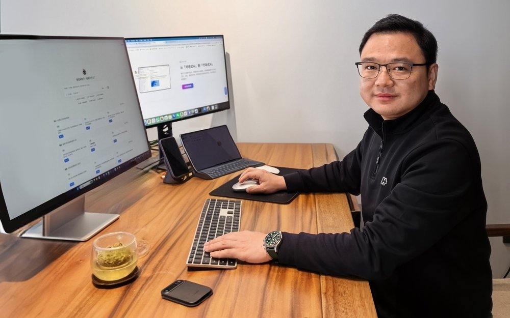
以前世界上只有一根金箍棒，现在有很多。但金箍棒放在东海龙宫是块废铁，只有能拿得起来、能驾驭得了它的才是孙悟空。钉钉的‘千问办公’让你想得更快、更敢想，而且你想到的，基本上就能做到